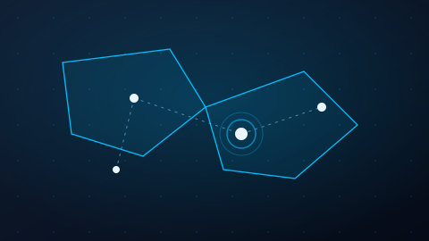
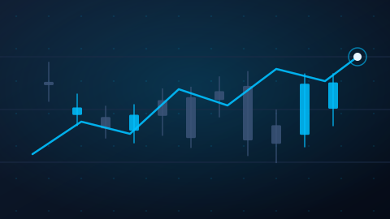
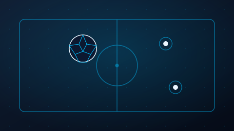
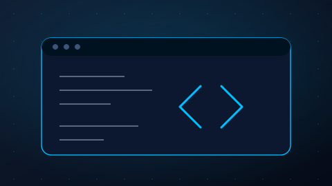

Desarrollo Web
Creación de aplicaciones y plataformas web modernas.
Hola, soy
SOFTWARE DEVELOPER
Desarrollo software para resolver problemas reales: sistemas de gestión, automatización de procesos y plataformas de análisis de datos.
Soy desarrollador de software con interés en crear soluciones tecnológicas innovadoras, funcionales y escalables.
He trabajado en proyectos relacionados con sistemas de gestión, aplicaciones financieras, automatización de procesos y plataformas de análisis de datos.
Me apasiona transformar ideas en herramientas digitales que optimicen procesos y generen valor para las personas y organizaciones.
Hablemos de tu proyectoCreación de aplicaciones y plataformas web modernas.
Desarrollo de herramientas para automatizar tareas y procesos.
Organización y gestión de información estructurada.
Diseño de sistemas adaptados a necesidades reales.
Explora algunas de las soluciones tecnológicas que he desarrollado.

Plataforma para la gestión territorial, registros ciudadanos, encuestas y visualización geográfica.
Permite administrar información territorial, registrar datos ciudadanos, gestionar encuestas y visualizar resultados sobre mapas mediante PostGIS.

Sistema de análisis técnico multitemporal que genera señales y las envía mediante Telegram.
Analiza múltiples temporalidades conectado a MetaTrader 5 y envía las señales generadas a Telegram. El bot únicamente genera y notifica señales; no ejecuta operaciones de trading de forma automática.

Sistema para la administración de jugadores, equipos y partidos, facilitando la organización de competencias deportivas.
Centraliza el registro de equipos, jugadores y partidos para el Cantón Sígsig, facilitando la organización de jornadas deportivas.
Aplicación orientada a la gestión de dinero digital, permitiendo registrar movimientos, controlar saldos y administrar operaciones financieras de manera organizada.
Proyecto de software financiero para registrar movimientos y controlar saldos de forma organizada, conservando únicamente las funcionalidades implementadas en el código.

Sitio web responsivo y accesible para presentar proyectos, tecnologías y experiencia profesional.
Este mismo sitio: construido con HTML5, CSS3 y JavaScript puro, cuidando accesibilidad, rendimiento y diseño responsivo.
Tecnologías utilizadas, plataformas exploradas y herramientas de mi entorno de desarrollo.
Formación académica y proyectos propios que marcan mi recorrido como desarrollador hasta ahora.
Formación en curso dentro del área de Software, cursando Aplicaciones Web.
Desarrollo de software y soluciones tecnológicas, participando en la creación y mejora de aplicaciones orientadas a necesidades empresariales.
Territorio Electoral, Bot de señales Forex, Jornadas Deportivas del Cantón Sígsig, Billetera Digital y este Portafolio Profesional.
Estoy interesado en colaborar en nuevos proyectos tecnológicos y desarrollar soluciones innovadoras.
Completa el formulario para preparar un mensaje de contacto.